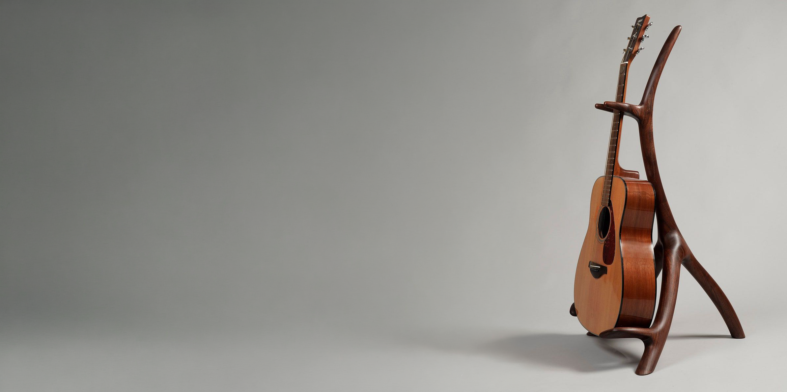
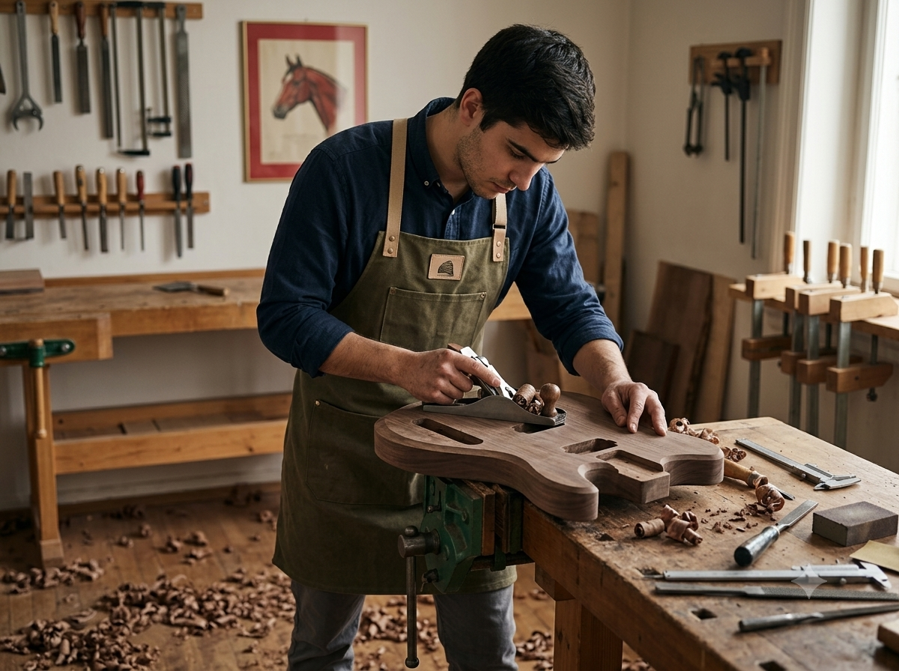

01
/ 05
La materia prima
Cada instrumento empieza en la madera.
Su densidad, estabilidad, veta y respuesta sonora determinan el carácter de la pieza desde el primer corte.

Aprendé el oficio de la luthería desde sus fundamentos hasta la construcción de instrumentos únicos. Dominá cada detalle que convierte una pieza en un instrumento con alma.
No enseñamos a ensamblar guitarras.
Enseñamos a construir instrumentos con identidad propia.
Cada decisión —la madera, el mástil, el peso, el acabado, el sonido— transforma una pieza en algo irrepetible.
El taller
Explorá los materiales, herramientas y decisiones que forman parte de la construcción de un instrumento.

Explorá la mesa Seleccioná un punto
La materia prima
Su densidad, estabilidad, veta y respuesta sonora determinan el carácter de la pieza desde el primer corte.
Programas
 Presencial · CABA
Presencial · CABA
Diseñá y construí una guitarra desde cero, desde la selección de maderas hasta la calibración final.
 Presencial · CABA
Presencial · CABA
Primer acercamiento al oficio, herramientas, materiales y procesos esenciales.
 Presencial · CABA
Presencial · CABA
Aprendé a ajustar, calibrar y cuidar instrumentos con criterios profesionales.
 Presencial · CABA
Presencial · CABA
Aprendé a trabajar con micrófonos, circuitos, potenciómetros y soldaduras para diagnosticar, reparar y personalizar el sonido de un instrumento.
Materia prima
Cada especie tiene su carácter, su densidad y su respuesta. Conocer la madera es el primer paso para construir un instrumento con identidad propia.
Claridad y precisión
Una madera clara, estable y de respuesta definida. Su rigidez y precisión la convierten en una elección ideal para mástiles y tapas con gran presencia visual.
Profundidad y tradición
Cálida, resonante y con gran sustain. Su tono profundo y su comportamiento estable la convierten en una de las maderas más tradicionales de la construcción artesanal.
Equilibrio y carácter
Su veta oscura y expresiva aporta una identidad visual única. Combina claridad, cuerpo y equilibrio para instrumentos de carácter contemporáneo.
Ligereza y sensibilidad
Ligero y sensible, responde rápidamente al toque y ofrece una sonoridad cálida. Es especialmente valorado en tapas y mástiles.
Proyección y dinamismo
Una madera liviana y elástica, reconocida por su proyección, rango dinámico y capacidad de responder tanto a ejecuciones suaves como intensas.
Trastes Private · Visión 2028
Un portal privado para acompañar la construcción, revisar avances y registrar cada decisión desde la selección de la madera hasta el primer acorde.
Portal en desarrollo · Lanzamiento previsto 2028
Etapa actual
La pieza fue cortada y comenzó el modelado de contornos. Próximo paso: cavidades, lijado y control de medidas.
La veta respondió de forma estable durante el corte. Conservaremos su dibujo natural en el acabado final.
Fotografías y avances documentados durante cada instancia del proceso.
Seguimiento claro desde el diseño inicial hasta la entrega final.
Registro de materiales, componentes y terminaciones seleccionadas.
Un canal privado para acompañar el proyecto junto al taller.
Instrumentos construidos

“Quería construir una guitarra que sonara como una extensión de mi forma de tocar.”

“Aprendí a escuchar la madera antes de tocarla con la herramienta.”

“Llegué buscando un curso y me fui con un oficio.”